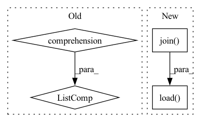

Pattern ID :11523
Before Change
self.n_relation = self.config["n_relation"]
entity_edges, word_edges = side_data
self.entity_edges, self.word_edges = [ele.to(self.device) for ele in entity_edges] , word_edges.to(self.device)
self.build_model()
After Change
self.n_positions = self.opt["n_positions"]
self.response_truncate = self.opt.get("response_truncate", 20)
// copy mask
dpath = os.path.join( DATA_PATH, "kgsf")
dfile = DownloadableFile("1zrszs2EcNlim3l7O0BH6XbalLMeUcMFv", "redial.zip",
"f627841644a184079acde1b0185e3a223945061c3a591f4bc0d7f62e7263f548",
from_google=True)
build(dpath, dfile)
self.copy_mask = torch.as_tensor(np.load( os.path.join(dpath, "copy_mask.npy")) .astype(bool), device=self.device)
self.build_model()
In pattern: SUPERPATTERN
Frequency: 3
Non-data size: 4
Instances Fragment ID: 39190966
Project Name: rucaibox/crslab
Commit Name: 7170808360daa341d8a6e8e9fc80446ff85670e0
Time: 2020-12-01
Author: wxl1999@foxmail.com
File Name: crslab/model/kgsf_model.py
M Class Name: KGSFModel
N Class Name: KGSFModel
M Method Name: __init__(4)
N Method Name: __init__(4)
M Parent Class: BaseModel
N Parent Class: BaseModel
M File Name: crslab/model/kgsf_model.py
N File Name: crslab/model/kgsf_model.py
M Start Line: 36
M End Line: 63
N Start Line: 44
N End Line: 75
Before Change
sgmts = [uttr[left:left+self.seg_len, :]
if left is not None else uttr
for uttr, left in zip(uttrs, lefts)]
return [torch.from_numpy(sgmt) for sgmt in sgmts]
def pad_batch(batch):
Pad a whole batch of utterances.After Change
uttr_names = random.sample(os.listdir(self.spkr_dirs[sid]),
self.n_utterances)
uttrs = [torch.load(os.path.join( self.spkr_dirs[sid], uttr_name) )
for uttr_name in uttr_names]
lefts = [random.randint(0, len(uttr) - self.seg_len)
if len(uttr) > self.seg_len else None Fragment ID: 39190968
Project Name: yistlin/dvector
Commit Name: 5d874506d52e0f7bcad2acd8ea7ef0accf7d7cae
Time: 2020-05-07
Author: yishen992@gmail.com
File Name: modules/se_dataset.py
M Class Name: SEDataset
N Class Name: SEDataset
M Method Name: __getitem__(2)
N Method Name: __getitem__(2)
M Parent Class: Dataset
N Parent Class: Dataset
M File Name: modules/se_dataset.py
N File Name: modules/se_dataset.py
M Start Line: 40
M End Line: 48
N Start Line: 37
N End Line: 51
Before Change
with open(data_path, "rb") as data_file:
data = pickle.load(data_file)
self.data = [[torch.from_numpy(u).cuda() for u in s] for s in data]
self.seg_len = seg_len
self.n_uttrances = n_utterances
def __len__(self):After Change
self.seg_len = seg_len
for data_file in os.listdir(data_dir):
data_path = os.path.join( data_dir, data_file)
raw = pickle.load( open(data_path, "rb"))
data = [torch.from_numpy(d) for d in raw if len(d) > seg_len]
if len(data) < n_utterances:
continue
self.data.append(data) Fragment ID: 39190969
Project Name: yistlin/dvector
Commit Name: 5e47d5f6e72c99fbd81923da2a611ae87d439032
Time: 2020-03-28
Author: yishen992@gmail.com
File Name: modules/utterances.py
M Class Name: Utterances
N Class Name: Utterances
M Method Name: __init__(4)
N Method Name: __init__(4)
M Parent Class: Dataset
N Parent Class: Dataset
M File Name: modules/utterances.py
N File Name: modules/utterances.py
M Start Line: 18
M End Line: 23
N Start Line: 20
N End Line: 34